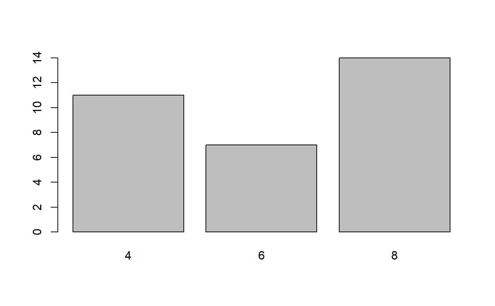
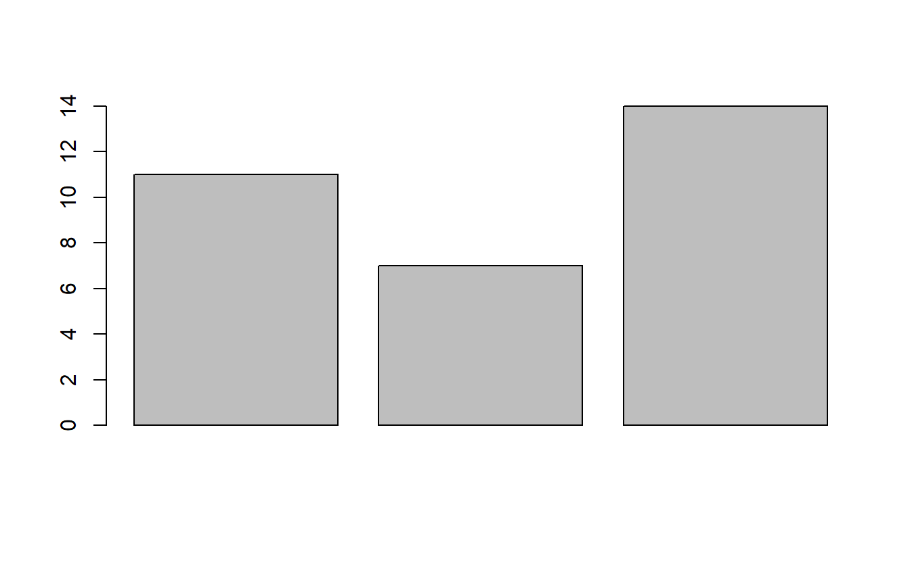
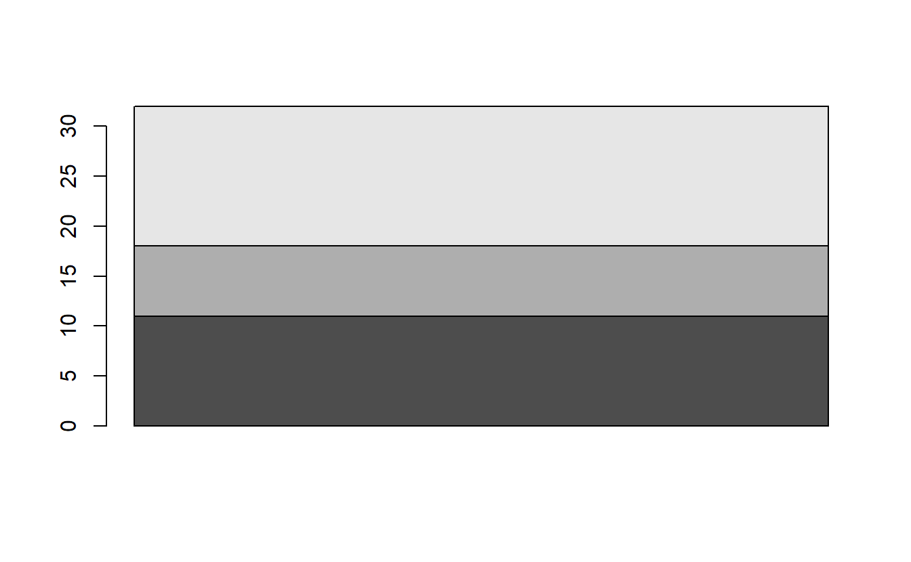
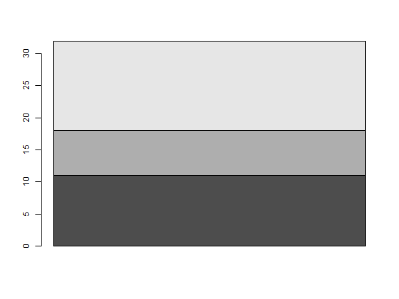
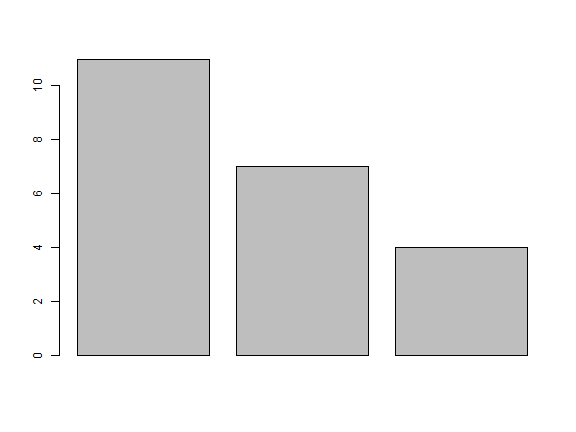
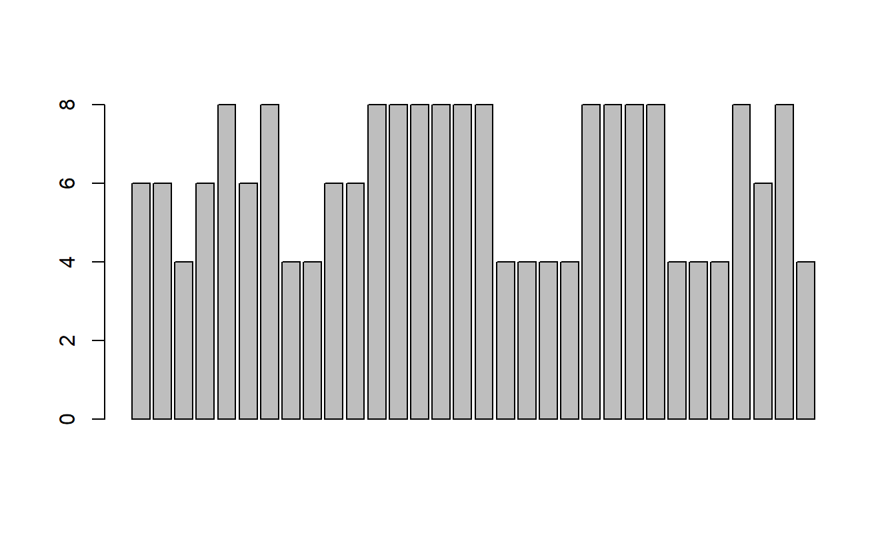

quick view
目前有哪些資料集可以測試
data()
attach()
一般是
library(sample)
data("mydata")
attach("mydata") 就不用打入mydata$欄位名稱
幾個常用的統計量:
x<-c(1,2,3)
median(x)
mean(x)
min(x)
sd(x)
range(x)
diff(x)
資料型態和內容
可以先看看資料描述 ?mtcars
mtcars
#> mpg cyl disp hp drat wt qsec vs am gear carb
#> Mazda RX4 21.0 6 160.0 110 3.90 2.620 16.46 0 1 4 4
#> Mazda RX4 Wag 21.0 6 160.0 110 3.90 2.875 17.02 0 1 4 4
#> Datsun 710 22.8 4 108.0 93 3.85 2.320 18.61 1 1 4 1
#> Hornet 4 Drive 21.4 6 258.0 110 3.08 3.215 19.44 1 0 3 1
#> Hornet Sportabout 18.7 8 360.0 175 3.15 3.440 17.02 0 0 3 2
#> Valiant 18.1 6 225.0 105 2.76 3.460 20.22 1 0 3 1
#> Duster 360 14.3 8 360.0 245 3.21 3.570 15.84 0 0 3 4
#> Merc 240D 24.4 4 146.7 62 3.69 3.190 20.00 1 0 4 2
#> Merc 230 22.8 4 140.8 95 3.92 3.150 22.90 1 0 4 2
#> Merc 280 19.2 6 167.6 123 3.92 3.440 18.30 1 0 4 4
#> Merc 280C 17.8 6 167.6 123 3.92 3.440 18.90 1 0 4 4
#> Merc 450SE 16.4 8 275.8 180 3.07 4.070 17.40 0 0 3 3
#> Merc 450SL 17.3 8 275.8 180 3.07 3.730 17.60 0 0 3 3
#> Merc 450SLC 15.2 8 275.8 180 3.07 3.780 18.00 0 0 3 3
#> Cadillac Fleetwood 10.4 8 472.0 205 2.93 5.250 17.98 0 0 3 4
#> Lincoln Continental 10.4 8 460.0 215 3.00 5.424 17.82 0 0 3 4
#> Chrysler Imperial 14.7 8 440.0 230 3.23 5.345 17.42 0 0 3 4
#> Fiat 128 32.4 4 78.7 66 4.08 2.200 19.47 1 1 4 1
#> Honda Civic 30.4 4 75.7 52 4.93 1.615 18.52 1 1 4 2
#> Toyota Corolla 33.9 4 71.1 65 4.22 1.835 19.90 1 1 4 1
#> Toyota Corona 21.5 4 120.1 97 3.70 2.465 20.01 1 0 3 1
#> Dodge Challenger 15.5 8 318.0 150 2.76 3.520 16.87 0 0 3 2
#> AMC Javelin 15.2 8 304.0 150 3.15 3.435 17.30 0 0 3 2
#> Camaro Z28 13.3 8 350.0 245 3.73 3.840 15.41 0 0 3 4
#> Pontiac Firebird 19.2 8 400.0 175 3.08 3.845 17.05 0 0 3 2
#> Fiat X1-9 27.3 4 79.0 66 4.08 1.935 18.90 1 1 4 1
#> Porsche 914-2 26.0 4 120.3 91 4.43 2.140 16.70 0 1 5 2
#> Lotus Europa 30.4 4 95.1 113 3.77 1.513 16.90 1 1 5 2
#> Ford Pantera L 15.8 8 351.0 264 4.22 3.170 14.50 0 1 5 4
#> Ferrari Dino 19.7 6 145.0 175 3.62 2.770 15.50 0 1 5 6
#> Maserati Bora 15.0 8 301.0 335 3.54 3.570 14.60 0 1 5 8
#> Volvo 142E 21.4 4 121.0 109 4.11 2.780 18.60 1 1 4 2
head(mtcars)
#> mpg cyl disp hp drat wt qsec vs am gear carb
#> Mazda RX4 21.0 6 160 110 3.90 2.620 16.46 0 1 4 4
#> Mazda RX4 Wag 21.0 6 160 110 3.90 2.875 17.02 0 1 4 4
#> Datsun 710 22.8 4 108 93 3.85 2.320 18.61 1 1 4 1
#> Hornet 4 Drive 21.4 6 258 110 3.08 3.215 19.44 1 0 3 1
#> Hornet Sportabout 18.7 8 360 175 3.15 3.440 17.02 0 0 3 2
#> Valiant 18.1 6 225 105 2.76 3.460 20.22 1 0 3 1
tail(mtcars)
#> mpg cyl disp hp drat wt qsec vs am gear carb
#> Porsche 914-2 26.0 4 120.3 91 4.43 2.140 16.7 0 1 5 2
#> Lotus Europa 30.4 4 95.1 113 3.77 1.513 16.9 1 1 5 2
#> Ford Pantera L 15.8 8 351.0 264 4.22 3.170 14.5 0 1 5 4
#> Ferrari Dino 19.7 6 145.0 175 3.62 2.770 15.5 0 1 5 6
#> Maserati Bora 15.0 8 301.0 335 3.54 3.570 14.6 0 1 5 8
#> Volvo 142E 21.4 4 121.0 109 4.11 2.780 18.6 1 1 4 2
head 前幾筆資料
tail 後幾筆資料
編輯/瀏覽資料
edit(mtcars)
data.entry(mtcars)
View(mtcars)
個別欄位
如果要顯示個別欄位,一般可以是mtcars$mpg,但是如果要直接使用mpg欄位,可以利用attach()
attach(mtcars)
mpg
#> [1] 21.0 21.0 22.8 21.4 18.7 18.1 14.3 24.4 22.8 19.2 17.8 16.4 17.3 15.2 10.4
#> [16] 10.4 14.7 32.4 30.4 33.9 21.5 15.5 15.2 13.3 19.2 27.3 26.0 30.4 15.8 19.7
#> [31] 15.0 21.4
質性數據的分析
欄位cyl為質性變數,可以利用table分析
table(mtcars$cyl)
#>
#> 4 6 8
#> 11 7 14
頻率圖
barplot(table(mtcars$cyl))

解釋下面兩個圖為甚麼不一樣?
v<-as.vector(table(mtcars$cyl))
barplot(v)

m<-as.matrix(table(mtcars$cyl))
barplot(m)

上面兩個圖不一樣,因為table()的定義,所以轉成矩陣以後是3x1。
x<-c(1,1,1)
x1<-as.matrix(x)
x2<-as.table(x)
x3<-table(x)
x1
x2
x3
[,1]
[1,] 1
[2,] 1
[3,] 1
# x2 原地轉
A B C
1 1 1
# x3 : 計算1有幾個
x
1
3
barplot(c(11,7,4))

barplot(mtcars$mpg)
barplot(mtcars$cyl)

assignment
- <-和 -> 是一對 ，可以向左和向右賦值
- = 是單向的 ，作用和<-基本相同，但對函數中的變數通常使用=
<<- 這個是全域賦值 ，跟變數的作用域有關，開發自己的套件(package)的時候,常用。
##Delete x (if it exists) rm(x)#> Warning in rm(x): 找不到物件 'x'mean(x = 1:10) #[1] 5.5#> [1] 5.5x #Error: object 'x' not found#> Error in eval(expr, envir, enclos): 找不到物件 'x'
觀察上面的x,第一行指令從環境中去掉變數x的定義。
第2行中的x是在block 中定義，因此執行完以後,會被殺掉。因此第三行指令,出現找不到x的提示。
後面測試<- operator:
mean(x <- 1:10) # [1] 5.5
#> [1] 5.5
x
#> [1] 1 2 3 4 5 6 7 8 9 10
x # [1] 1 2 3 4 5 6 7 8 9 10
This time the x variable is declared within the user workspace.
When does the assignment take place ?
In the code above, you may be tempted to thin that we “assign 1:10 to x, then calculate the mean.
” This would be true for
#languages such as C, but it isn ’t true in R. Consider the following function:
a <- 1
f <- function(a) return(TRUE)
f <- f(a <- a + 1);
# 輸出:TRUE
a # 結果=1
#> [1] 1
注意上面a的值,仍然是1。原因是因為R的編譯器,在最佳化的時候,知道函數中沒用到參數,因此根本沒有存取到變數a,因此，原來的a是甚麼,a仍然是甚麼。
簡單講就是f(a<-a+1)中的a<-a+1 被去掉不會被執行
f(a<-a+1) => f()
rewrite
f <- function(a)
{
if (runif(1) > 0.5) TRUE else a
}
f(a <- a + 1);
a # result 2
#> [1] 2
- 這個函數
f用到了參數a,但是編譯器這次沒那麼聰明,知道使用者用a來做甚麼,雖然這個函數的body仍然沒有動到a,但是這次f(a<-a+1)中的a<-a+1會被執行。
:::quiz
練習
先去掉環境中的變數a,然後在執行上面的chunk.
hint: rm(a)
:::f(a <- a + 1); # TRUE a # 2#> [1] 3f(a <- a + 1); a #3#> [1] 4a<-1; f <- function(a) return(a); invisible(f(a=a+1)) a#> [1] 1invisible(f(a<-a+1)) a#> [1] 2
上面程式中,invisible函數在這裡的說明不重要,只是用來隱藏計算結果。
a<-1;
f <- function(a) return(3);
invisible(f(a=a+1))
a
#> [1] 1
invisible(f(a<-a+1))
a
#> [1] 1
=用在參數指派
例如
matrix(1:20, ncol = 4)
#> [,1] [,2] [,3] [,4]
#> [1,] 1 6 11 16
#> [2,] 2 7 12 17
#> [3,] 3 8 13 18
#> [4,] 4 9 14 19
#> [5,] 5 10 15 20
ncol
#> function (x)
#> dim(x)[2L]
#> <bytecode: 0x00000000186f4430>
#> <environment: namespace:base>
產生5X4矩陣。如果
matrix(1:20, ncol <- 4)
#> [,1] [,2] [,3] [,4] [,5]
#> [1,] 1 5 9 13 17
#> [2,] 2 6 10 14 18
#> [3,] 3 7 11 15 19
#> [4,] 4 8 12 16 20
ncol
#> [1] 4
會產生一個變數 ncol，這裡產生的為4x5的矩陣。為甚麼?因為這裡的第2個參數ncol<-4,指派給變數ncol,然後這個expression會return 4,而4就被當成第2個參數,也就是matrix(1:20, ncol <- 4)等同於matrix(1:20, 4),也就是指定ROW的維度。
結論:x<-3 <-會在全局產生變數x然後指派3
(x <- 3)
#> [1] 3
#rm(list = ls())
rm(x)
ls()
#> [1] "a" "f" "m" "ncol" "v"
(x = 3)
#> [1] 3
ls()
#> [1] "a" "f" "m" "ncol" "v" "x"
因為x是參數名稱不是變數,看mean help